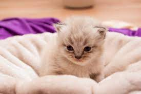
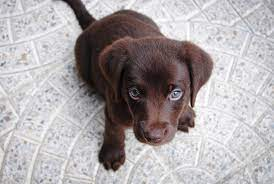
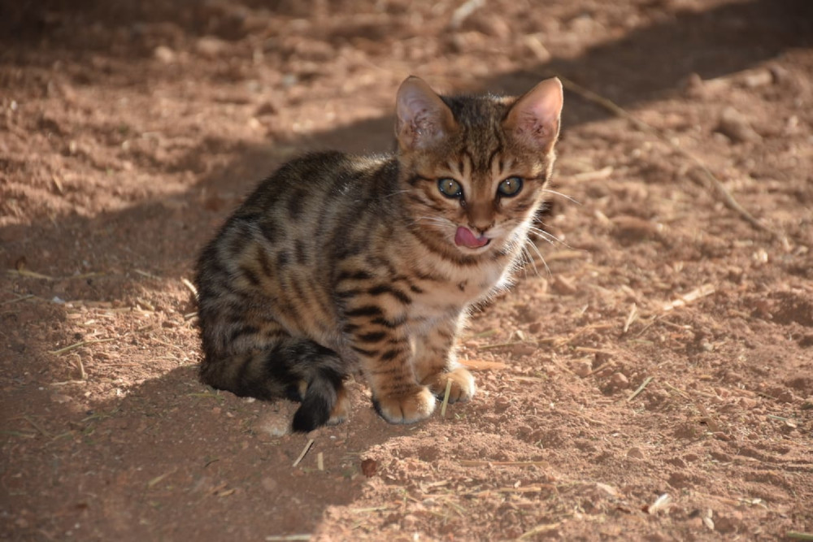

E nada melhor que praticar usando um tema foto, né não?
E de tema fofo,nada melhor do que filhotinhos 😍

Você deve estar se perguntando o porquê de ser sobre filhotes
Bom... porquê...
Então já que estou bem no meio de um treinamento sobre os mais variados conhecimentos adquiridos dentro deste primeiro módulo de HTML e CSS, bora treinar!
Como afirma o portal Psicologias do Brasil:
Não é segredo que os animais contribuem positivamente para a vida das pessoas. Não só os animais de estimação mudam o dia-a-dia das pessoas, mas também o simples fato de permanecer em contato com esses seres vivos melhoraria a saúde mental.

Com a vinda da pandemia do coronavírus e o isolamento social, não só o aumento na utilização das redes sociais ocorreu, como também os casos de adoção de animais de estimação.Segundo uma publicação online da revista Forbes:
Em uma pesquisa encomendada pela marca de nutrição animal Royal Canin, realizada em agosto deste ano em todo o território nacional, foi constatado um aumento de 16% no número de felinos nos lares brasileiros durante a pandemia do novo coronavírus. Desse total, 11,5% alegaram ter adquirido um gato principalmente por causa da solidão.
Para ler esta notícia na íntegra,clique aqui
